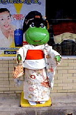
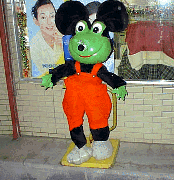

A frog is a happy symbol

You. There is a mark which anyone understands in the pharmacy in Japan. It is because the doll of a big frog is put on the shop front of any pharmacies.A place with the doll of a frog is just a pharmacy. Japanese people love the doll of the frog at the shop front of a pharmacy very much. If the owner of the doll of a frog becomes the New Year, it will dress with holiday clothes or he will make it Santa Claus's figure at Christmas. the natural feeling of the Japanese who loves the doll of a frog does not make only guy gin -- being alike -- he may be unable to understand However, living with a frog is all Japanese's natural feeling.
It is natural scenery, as "Mt. Fuji is worshipped at a morning and an evening, a woman has holiday clothes on and a male has a crested hakama on"'s the New Year or the birthday of God on April 8. The pharmacy to introduce is the figure of a very general pharmacy which can be seen anywhere in Japan today.

The doll of a frog is put on the shop front. Since it was the New Year, the doll of a frog had the kimono on. Moreover, the photoed moon was a special moon. The master of a pharmacy went out for the Urayasu day ZUNI land made to Chiba Prefecture. Since the impression was expressed, the master made the doll of a frog so that it might be visible to a MIKKI mouse.It is fusion of a frog and a MIKKI mouse. There is no thing wonderful like this. Only guy gin is not made. Thus, it lives with a frog, and if you understand the custom of the Japanese who enjoys himself with a frog, pleasure of the sightseeing tour to our country will become large.
In some cases, I want to need your help on the occasion of the sightseeing tour to our country. the world -- please carry out neither meal nor tea drinking in the hamburger store which it is also in where, and the Seattle system cafe Such proverbs exist in Japan. "When in Rome, do as the Romans do", "KAERU PYOKO PYOKO MI PYOKO PYOKO" Let's use a meal as Japanese noodles, buckwheat noodles, and sushi.
 Please make tea drinking a powdered-green-tea set with Japanese sweets. If it has on the Japanese clothes bought in the souvenir thing store and you walk, it will be welcomed wherever it may go.
To a mark, let's call the doll of a frog at a pharmacy again. time cold medicine is required -- " -- I am pulling the wind Please give COL-GENKOWA. Please shout," with a sufficient thing with the KERO my doll.
Please make tea drinking a powdered-green-tea set with Japanese sweets. If it has on the Japanese clothes bought in the souvenir thing store and you walk, it will be welcomed wherever it may go.
To a mark, let's call the doll of a frog at a pharmacy again. time cold medicine is required -- " -- I am pulling the wind Please give COL-GENKOWA. Please shout," with a sufficient thing with the KERO my doll.
The small doll of a frog is given with cold medicine with a smile. It should become the recollections of a lifetime trip.
Then, let's pronounce together.
Watasi ha kaze wo hiite imasu. Korugen kouwa wo kudasai.Kero-cyan ningyou ga tuita monoga iidesu.
【ALL FROG PAGE】
1. Frog good's
2. WWW Frog Pages Link
3. Top Page
4. Change Frog doll
§KING OF GEKOGEKO7th
§Osaka Eede=English only 1997.oct.19